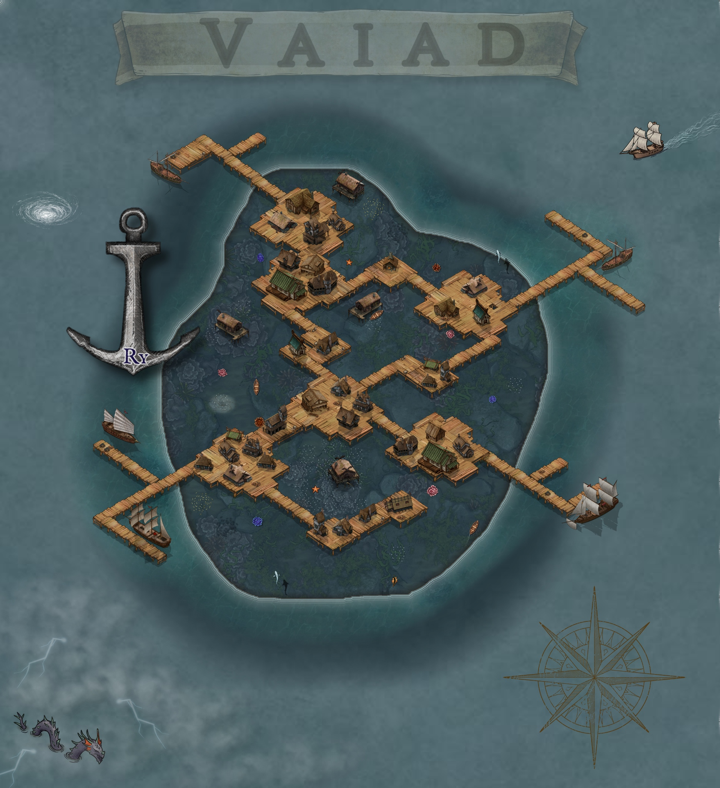
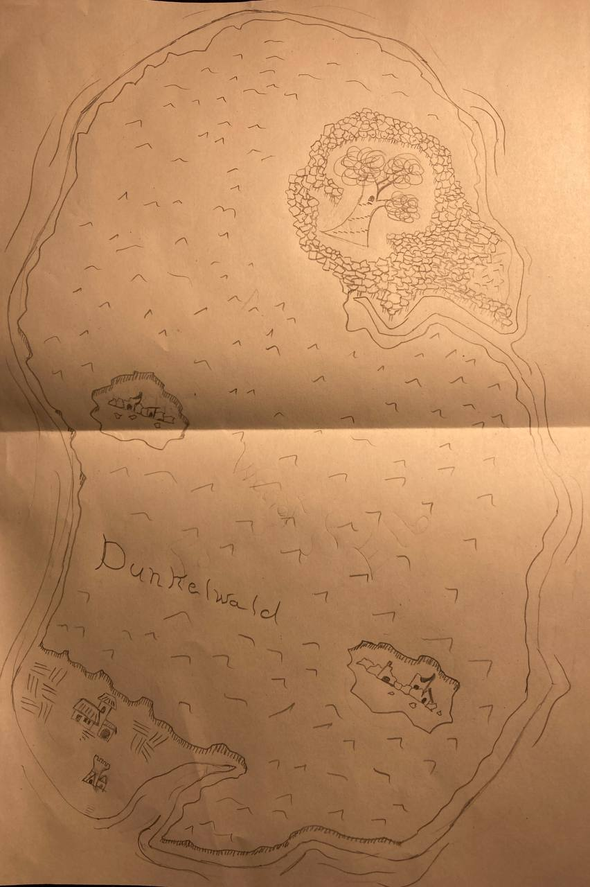

Inseln
Die freien Inseln, die keinem Kontinent zugeordnet werden.
Vaiad
Ry
Ry ist eine sehr junge Stadt und befindet sich auf der Insel Vaiad.
Sie dient als Handelspunkt zwischen den großen Landmassen.
Da Vaiad allerdings nicht über den Meeresspiegel hinaus ragt, wurde die Stadt auf einem Holzgerüst gebaut, welches mit der Insel verankert ist.
Hier leben hauptsächlich Händler und kuriose Gestalten. Außerdem kursieren Gerüchte über einen riesigen Schwarzmarkt.
Da heiße Quellen von der Insel aufsteigen, gibt es hier einige Thermen.
Puletsi
Suru
Herkunftsland und letzter Rückzugsort der Elben. Vereinzelte Ruinen brechen die sonst bestehende Einheit aus Bäumen.
Im Nordosten befindet sich der heilige Baum, heilige Stätte der Elben mit den dort lebenden Baumgeistern.